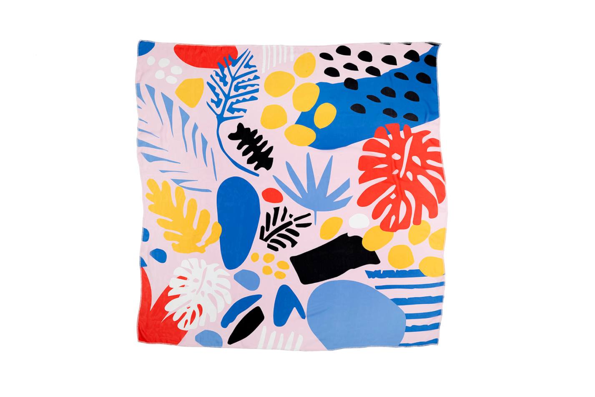
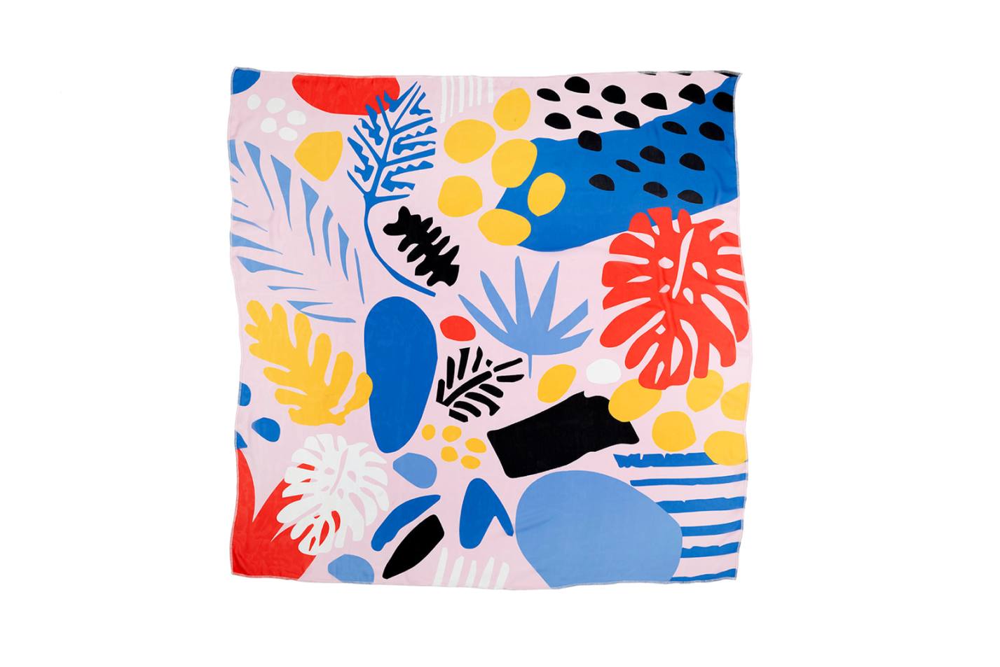
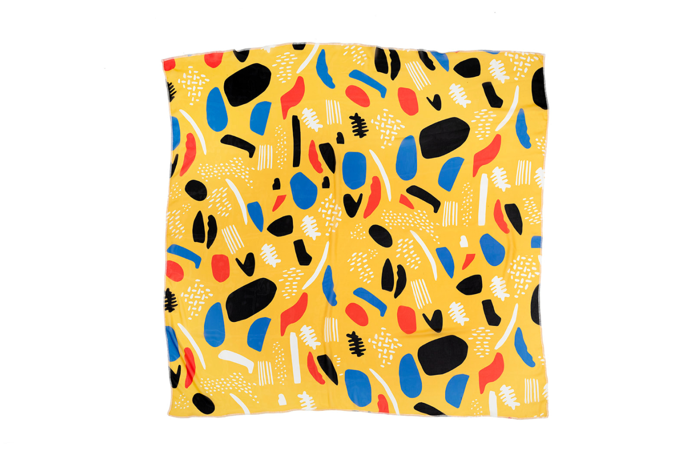
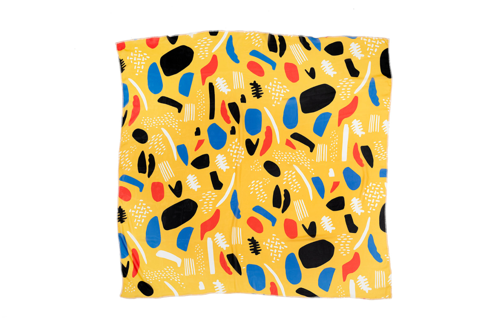

The 'Revelations' collection is a wearable work of art that connects fashion and
philosophy.
The design process starts with a mystery and uncovers the truth slowly
as you proceed. Inspired by 'The Lovers II' (1928 by Rene Magritte), we
wanted to be those lovers, under these scarves, getting uncovered. We
designed scarves to celebrate the birth and uncover what is Under. It aims to capture the essence of love,
discovery, and intimacy. Each scarf features
unique patterns and vibrant colors that represent life and emotions.
Crafted from high-quality materials, these scarves are comfortable and visually appealing. The designs symbolize
the complexity of human relationships and the power of love.
Client | Studio Under
Photography | Aya Wind


 


 
